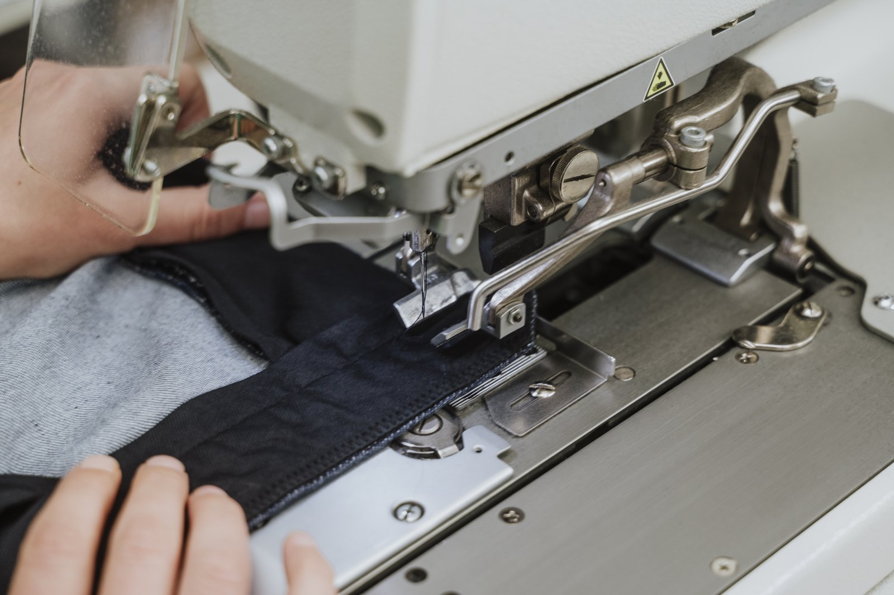
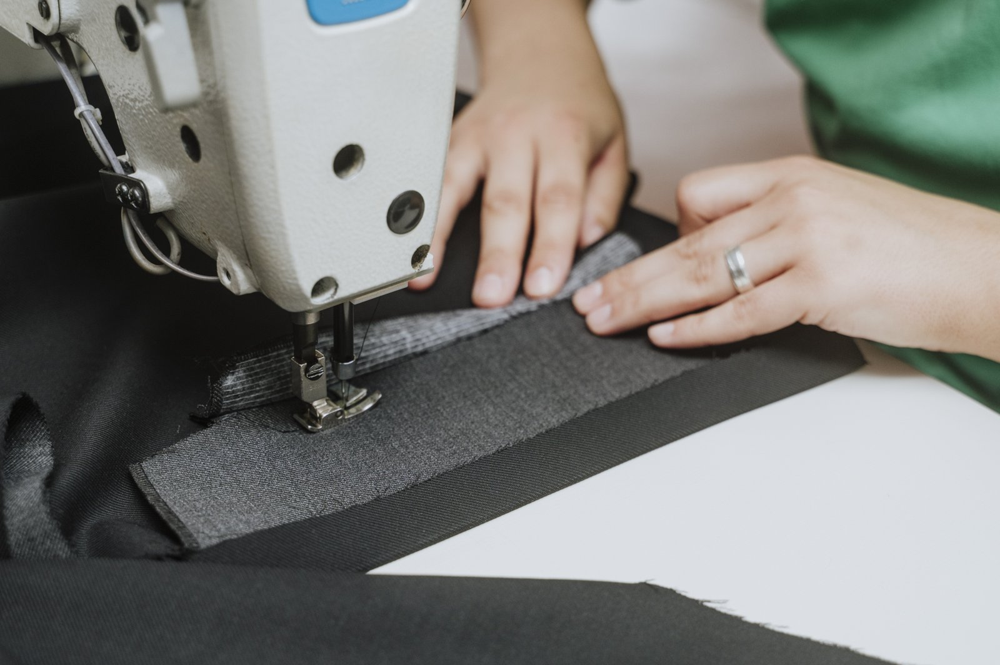
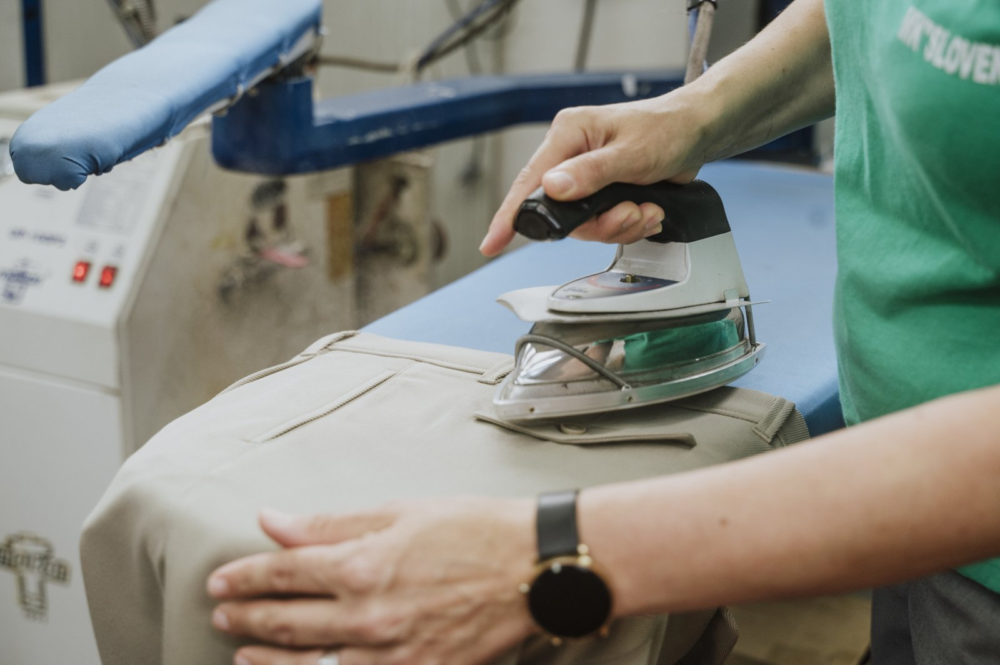

MK SLOVENKA / SINCE 1979.
Our story.
Our character.
More than forty years of garment manufacturing experience. A tradition rooted in Donji Vakuf, knowledge gained on the European market and a modern view of fashion.
OUR COMPANY
It all began
in Donji Vakuf.
The story of Modna konfekcija “Slovenka” began in Donji Vakuf in 1979. Since then, generations, fashion, trends and times have changed, but one thing remains the same: the desire to create clothing with its own character and a place in everyday life.
More than forty years of experience are now woven into the way we think about fashion and manufacturing. Over the decades, we have grown, evolved and expanded our knowledge, building a company that brings together a tradition of garment manufacturing and a modern view of fashion.

OUR MANUFACTURING RANGE
Experience in every cut.
Trousers hold a special place in our work. Women’s and men’s, classic and contemporary, simple or defined by their cut — trousers are one of the areas for which our manufacturing is known. Alongside them, we create blazers, suits and sets, dresses, skirts, shirts, jackets, jumpsuits and other garments.
Our story, however, extends beyond fashion. For years, we have also developed workwear and professional clothing, from work suits and uniforms to medical coats and clothing for healthcare workers. Our manufacturing range also includes flags, bringing Slovenka’s experience to different textile products and uses.
Look inside manufacturingTRADITION & NEW IDEAS
From Donji Vakuf.
Looking ahead.
Part of our story has long been written beyond Bosnia and Herzegovina. We have collaborated with renowned companies from Germany and built experience on the European market, learning standards, requirements and ways of working that have further shaped our manufacturing.
Today, alongside our work with business partners, we develop our own designs and collections. They bring together decades of experience and contemporary fashion that is constantly changing. We want to create pieces that go beyond a single season: clothing you return to because it offers what you are looking for — good looks, comfort and confidence.
Our business remains rooted in Donji Vakuf, where it all began. From here, we continue to build on the same foundations, with new ideas and an eye on what comes next. You can also find our products at our own retail store in Bugojno, where we present our collections directly to customers.
People behind the process
Start a conversation
